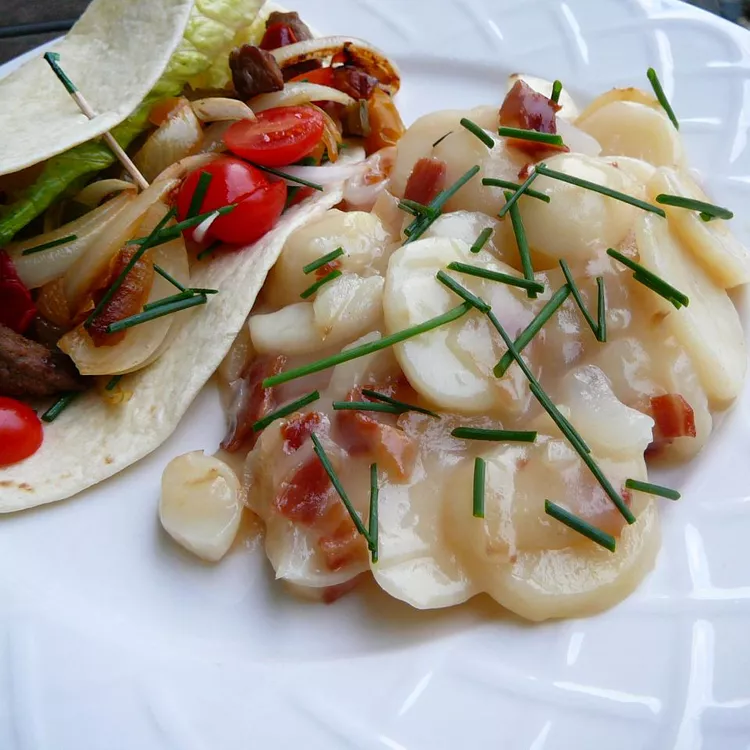

German Potato Salad

Description
This recipe for German potato salad with green onions and a tangy bacon vinaigrette makes the perfect side dish for any meal as it can be served warm, at room temperature, or cold. You can vary the amount of vinegar and sugar to change the taste. Great for parties, picnics, and potlucks.
Ingredients
- 4 medium potatoes, cut into bite-sized pieces
- 4 slices bacon
- 2 tablespoons white sugar
- 1 tablespoon all-purpose flour
- ⅓ cup water
- ¼ cup white wine vinegar
- ½ cup chopped green onions
- salt and ground black pepper to taste
Steps
- Bring a large pot of salted water to a boil. Add potatoes; cook until fork-tender, 8 to 15 minutes. Drain.
- While potatoes are cooking, cook bacon in a large, deep skillet over medium-high heat until browned and crispy, 8 to 10 minutes. Remove bacon to a paper towel-lined plate, leaving drippings in the skillet. Chop or crumble bacon when cool enough to handle.
- Add sugar and flour to drippings in the skillet, then pour in water and vinegar. Cook over medium heat, stirring any browned bits off the bottom with a wooden spoon, until dressing is thick, 3 to 5 minutes. Turn off heat.
- Add potatoes, crumbled bacon, and green onions to the skillet; stir until coated. Season with salt and pepper.